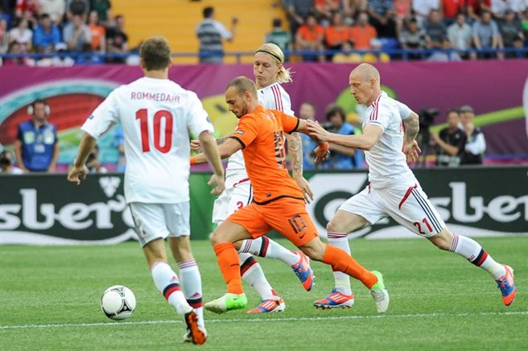

The profile
Wesley Sneijder
Wesley Sneijder was born in Utrecht and entered Ajax’s youth academy at a young age. His development in Amsterdam gave him the technical base for a career as an attacking midfielder.
He developed at Ajax before playing for Real Madrid, Inter Milan and Galatasaray. An attacking midfielder with a wide range of passes, he can switch play quickly or deliver a precise set piece. His timing around the penalty area also turned him into a scorer when the Netherlands needed one.
Sneijder drove the Netherlands toward the 2010 World Cup final with five goals, sharing the tournament scoring lead. He scored in the quarter-final win over Brazil and again in the semi-final against Uruguay, giving a disciplined side a decisive attacking edge. The Netherlands lost 1–0 to Spain in extra time, but his goals and distribution were central to its run.
2006Germany
Round of 16
Group C Serbia and Montenegro0 : 1Netherlands
- Arjen ROBBEN18′
Serbia and Montenegrohome
Starting lineup
- Dragoslav JEVRIC
- Ivica DRAGUTINOVIC
- Goran GAVRANCIC
- Nenad DJORDJEVIC
- Mladen KRSTAJIC
- Igor DULJAJ
- Dejan STANKOVIC
- Predrag DJORDJEVIC
- Albert NADJ
- Mateja KEZMAN
- Savo MILOSEVIC
Substitutions
- 43′Ognjen KOROMAN on · Nenad DJORDJEVIC off
- 45+1′Nikola ZIGIC on · Savo MILOSEVIC off
- 67′Danijel LJUBOJA on · Mateja KEZMAN off
Netherlandsaway
Starting lineup
- Edwin VAN DER SAR
- Joris MATHIJSEN
- Giovanni VAN BRONCKHORST
- Andre OOIJER
- John HEITINGA
- Phillip COCU
- Mark VAN BOMMEL
- Wesley SNEIJDER
- Ruud VAN NISTELROOIJ
- Arjen ROBBEN
- Robin VAN PERSIE
Substitutions
- 60′Denny LANDZAAT on · Mark VAN BOMMEL off
- 69′Dirk KUYT on · Ruud VAN NISTELROOIJ off
- 86′Khalid BOULAHROUZ on · Joris MATHIJSEN off
Group C Netherlands2 : 1Ivory Coast
- Robin VAN PERSIE23′
- Ruud VAN NISTELROOIJ27′
- Bakary KONE38′
Netherlandshome
Starting lineup
- Edwin VAN DER SAR
- Joris MATHIJSEN
- Giovanni VAN BRONCKHORST
- Andre OOIJER
- John HEITINGA
- Phillip COCU
- Mark VAN BOMMEL
- Wesley SNEIJDER
- Ruud VAN NISTELROOIJ
- Arjen ROBBEN
- Robin VAN PERSIE
Substitutions
- 45+1′Khalid BOULAHROUZ on · John HEITINGA off
- 50′Rafael VAN DER VAART on · Wesley SNEIJDER off
- 73′Denny LANDZAAT on · Ruud VAN NISTELROOIJ off
Ivory Coastaway
Starting lineup
- Jean-Jacques TIZIE
- Arthur BOKA
- Kolo TOURÉ
- Abdoulaye MEITE
- Emmanuel EBOUE
- Didier ZOKORA
- Yaya TOURE
- ROMARIC
- Arouna KONE
- Didier DROGBA
- Bakary KONE
Substitutions
- 62′Aruna DINDANE on · Bakary KONE off
- 62′Gilles YAPI YAPO on · ROMARIC off
- 73′Kanga AKALE on · Arouna KONE off
Group C Netherlands0 : 0Argentina
Netherlandshome
Starting lineup
- Edwin VAN DER SAR
- Kew JALIENS
- Khalid BOULAHROUZ
- Andre OOIJER
- Tim DE CLER
- Phillip COCU
- Rafael VAN DER VAART
- Wesley SNEIJDER
- Dirk KUYT
- Ruud VAN NISTELROOIJ
- Robin VAN PERSIE
Substitutions
- 56′Ryan BABEL on · Ruud VAN NISTELROOIJ off
- 67′Denny LANDZAAT on · Robin VAN PERSIE off
- 86′Hedwiges MADURO on · Wesley SNEIJDER off
Argentinaaway
Starting lineup
- Roberto ABBONDANZIERI
- Roberto AYALA
- Gabriel MILITO
- Leandro CUFRE
- Nicolas BURDISSO
- Esteban CAMBIASSO
- Javier MASCHERANO
- Juan RIQUELME
- Maxi RODRIGUEZ
- Carlos TEVEZ
- Lionel MESSI
Substitutions
- 24′Fabricio COLOCCINI on · Nicolas BURDISSO off
- 70′Julio CRUZ on · Lionel MESSI off
- 80′Pablo AIMAR on · Juan RIQUELME off
Round of 16 Portugal1 : 0Netherlands
- MANICHE23′
Portugalhome
Starting lineup
- RICARDO
- FERNANDO MEIRA
- MIGUEL
- NUNO VALENTE
- RICARDO CARVALHO
- COSTINHA
- MANICHE
- DECO
- Luis FIGO
- PAULETA
- CRISTIANO RONALDO
Substitutions
- 34′SIMAO on · CRISTIANO RONALDO off
- 46′PETIT on · PAULETA off
- 84′TIAGO on · Luis FIGO off
Netherlandsaway
Starting lineup
- Edwin VAN DER SAR
- Khalid BOULAHROUZ
- Joris MATHIJSEN
- Giovanni VAN BRONCKHORST
- Andre OOIJER
- Phillip COCU
- Mark VAN BOMMEL
- Wesley SNEIJDER
- Dirk KUYT
- Arjen ROBBEN
- Robin VAN PERSIE
Substitutions
- 56′Rafael VAN DER VAART on · Joris MATHIJSEN off
- 67′John HEITINGA on · Mark VAN BOMMEL off
- 84′Jan VENNEGOOR OF HESSELINK on · Phillip COCU off
2010South Africa
Runner-up
Group E Netherlands2 : 0Denmark
- Daniel AGGER45′ · own goal
- Dirk KUYT84′
Netherlandshome
Starting lineup
- Maarten Stekelenburg
- Gregory VAN DER WIEL
- John HEITINGA
- Joris MATHIJSEN
- Giovanni VAN BRONCKHORST
- Mark VAN BOMMEL
- Nigel DE JONG
- Wesley SNEIJDER
- Rafael VAN DER VAART
- Dirk KUYT
- Robin VAN PERSIE
Substitutions
- 66′Eljero ELIA on · Rafael VAN DER VAART off
- 76′Ibrahim AFELLAY on · Robin VAN PERSIE off
- 87′Demy DE ZEEUW on · Nigel DE JONG off
Denmarkaway
Starting lineup
- Thomas SORENSEN
- Simon KJAER
- Daniel AGGER
- Lars JACOBSEN
- Simon POULSEN
- Christian POULSEN
- Martin JORGENSEN
- Thomas KAHLENBERG
- Thomas ENEVOLDSEN
- Nicklas BENDTNER
- Dennis ROMMEDAHL
Substitutions
- 55′Jesper GRONKJAER on · Thomas ENEVOLDSEN off
- 61′Mikkel BECKMANN on · Nicklas BENDTNER off
- 72′Christian ERIKSEN on · Thomas KAHLENBERG off
Group E Netherlands1 : 0Japan
- Wesley SNEIJDER52′
Netherlandshome
Starting lineup
- Maarten Stekelenburg
- Gregory VAN DER WIEL
- John HEITINGA
- Joris MATHIJSEN
- Giovanni VAN BRONCKHORST
- Mark VAN BOMMEL
- Nigel DE JONG
- Wesley SNEIJDER
- Rafael VAN DER VAART
- Dirk KUYT
- Robin VAN PERSIE
Substitutions
- 71′Eljero ELIA on · Rafael VAN DER VAART off
- 82′Ibrahim AFELLAY on · Wesley SNEIJDER off
- 87′Klaas Jan HUNTELAAR on · Robin VAN PERSIE off
Japanaway
Starting lineup
- Eiji Kawashima
- Yuichi KOMANO
- Marcus Tulio TANAKA
- Yuto Nagatomo
- Yuji NAKAZAWA
- Yuki ABE
- Yasuhito ENDO
- Daisuke MATSUI
- Makoto Hasebe
- Keisuke HONDA
- Yoshito OKUBO
Substitutions
- 63′Shunsuke NAKAMURA on · Daisuke MATSUI off
- 76′Keiji TAMADA on · Yoshito OKUBO off
- 76′Shinji OKAZAKI on · Makoto Hasebe off
Group E Cameroon1 : 2Netherlands
- Samuel ETOO64′ · pen.
- Robin VAN PERSIE35′
- Klaas Jan HUNTELAAR82′
Cameroonhome
Starting lineup
- Hamidou SOULEYMANOU
- Benoit ASSOU-EKOTTO
- Nicolas NKOULOU
- GEREMI
- Gaetan BONG
- Aurelien CHEDJOU
- Stephane MBIA
- Landry NGUEMO
- Jean MAKOUN
- Samuel ETOO
- CHOUPO-MOTING Eric Maxim
Substitutions
- 55′Vincent ABOUBAKAR on · Gaetan BONG off
- 71′Mohamadou IDRISSOU on · CHOUPO-MOTING Eric Maxim off
- 72′Rigobert SONG on · Nicolas NKOULOU off
Netherlandsaway
Starting lineup
- Maarten Stekelenburg
- John HEITINGA
- Joris MATHIJSEN
- Giovanni VAN BRONCKHORST
- Khalid BOULAHROUZ
- Mark VAN BOMMEL
- Nigel DE JONG
- Wesley SNEIJDER
- Rafael VAN DER VAART
- Dirk KUYT
- Robin VAN PERSIE
Substitutions
- 58′Klaas Jan HUNTELAAR on · Robin VAN PERSIE off
- 65′Eljero ELIA on · Dirk KUYT off
- 72′Arjen ROBBEN on · Rafael VAN DER VAART off
Round of 16 Netherlands2 : 1Slovakia
- Arjen ROBBEN17′
- Wesley SNEIJDER83′
- Robert VITTEK90+3′ · pen.
Netherlandshome
Starting lineup
- Maarten Stekelenburg
- Gregory VAN DER WIEL
- John HEITINGA
- Joris MATHIJSEN
- Giovanni VAN BRONCKHORST
- Mark VAN BOMMEL
- Nigel DE JONG
- Wesley SNEIJDER
- Dirk KUYT
- Robin VAN PERSIE
- Arjen ROBBEN
Substitutions
- 70′Eljero ELIA on · Arjen ROBBEN off
- 79′Klaas Jan HUNTELAAR on · Robin VAN PERSIE off
- 90+1′Ibrahim AFELLAY on · Wesley SNEIJDER off
Slovakiaaway
Starting lineup
- Jan MUCHA
- Peter PEKARIK
- Martin SKRTEL
- Radoslav ZABAVNIK
- Jan DURICA
- Vladimir WEISS
- Miroslav STOCH
- Marek HAMSIK
- Juraj Kucka
- Robert VITTEK
- Erik Jendrišek
Substitutions
- 71′Kamil KOPUNEK on · Erik Jendrišek off
- 86′Marek SAPARA on · Marek HAMSIK off
- 87′Martin JAKUBKO on · Radoslav ZABAVNIK off
Quarterfinal Netherlands2 : 1Brazil
- Wesley SNEIJDER52′
- Wesley SNEIJDER67′
- ROBINHO9′
Netherlandshome
Starting lineup
- Maarten Stekelenburg
- Gregory VAN DER WIEL
- John HEITINGA
- Giovanni VAN BRONCKHORST
- Andre OOIJER
- Mark VAN BOMMEL
- Nigel DE JONG
- Wesley SNEIJDER
- Dirk KUYT
- Robin VAN PERSIE
- Arjen ROBBEN
Substitutions
- 84′Klaas Jan HUNTELAAR on · Robin VAN PERSIE off
Brazilaway
Starting lineup
- JULIO CESAR
- MAICON
- LUCIO
- JUAN
- MICHEL BASTOS
- DANI ALVES
- FELIPE MELO
- GILBERTO SILVA
- KAKA
- LUIS FABIANO
- ROBINHO
Substitutions
- 61′GILBERTO MELO on · MICHEL BASTOS off
- 76′NILMAR on · LUIS FABIANO off
Semifinal Uruguay2 : 3Netherlands
- Diego FORLAN40′
- Maximiliano PEREIRA90+1′
- Giovanni VAN BRONCKHORST17′
- Wesley SNEIJDER69′
- Arjen ROBBEN72′
Uruguayhome
Starting lineup
- Fernando MUSLERA
- Diego GODIN
- Mauricio VICTORINO
- Maximiliano PEREIRA
- Martin CACERES
- Walter GARGANO
- Alvaro PEREIRA
- Diego PEREZ
- Egidio AREVALO
- Edinson CAVANI
- Diego FORLAN
Substitutions
- 77′Sebastian ABREU on · Alvaro PEREIRA off
- 83′Sebastián FERNÁNDEZ on · Diego FORLAN off
Netherlandsaway
Starting lineup
- Maarten Stekelenburg
- John HEITINGA
- Joris MATHIJSEN
- Giovanni VAN BRONCKHORST
- Khalid BOULAHROUZ
- Mark VAN BOMMEL
- Wesley SNEIJDER
- Demy DE ZEEUW
- Dirk KUYT
- Robin VAN PERSIE
- Arjen ROBBEN
Substitutions
- 45′Rafael VAN DER VAART on · Demy DE ZEEUW off
- 88′Eljero ELIA on · Arjen ROBBEN off
Final Netherlands0 : 1Spain
- Andres INIESTA115′
Netherlandshome
Starting lineup
- Maarten Stekelenburg
- Gregory VAN DER WIEL
- John HEITINGA
- Joris MATHIJSEN
- Giovanni VAN BRONCKHORST
- Mark VAN BOMMEL
- Nigel DE JONG
- Wesley SNEIJDER
- Dirk KUYT
- Robin VAN PERSIE
- Arjen ROBBEN
Substitutions
- 70′Eljero ELIA on · Dirk KUYT off
- 98′Rafael VAN DER VAART on · Nigel DE JONG off
- 104′Edson BRAAFHEID on · Giovanni VAN BRONCKHORST off
Spainaway
Starting lineup
- Iker CASILLAS
- Gerard PIQUE
- Carles PUYOL
- Joan CAPDEVILA
- Sergio RAMOS
- Andres INIESTA
- Xavi HERNANDEZ
- Xabi ALONSO
- Sergio BUSQUETS
- David VILLA
- PEDRO
Substitutions
- 59′Jesús NAVAS on · PEDRO off
- 86′Cesc FABREGAS on · Xabi ALONSO off
- 105′Fernando TORRES on · David VILLA off
2014Brazil
Third place
Group B Spain1 : 5Netherlands
- Xabi ALONSO26′ · pen.
- Robin VAN PERSIE43′
- Arjen ROBBEN52′
- Stefan de Vrij64′
- Robin VAN PERSIE71′
- Arjen ROBBEN79′
Spainhome
Starting lineup
- Iker CASILLAS
- Gerard PIQUE
- Sergio RAMOS
- Jordi ALBA
- Andres INIESTA
- Xavi HERNANDEZ
- Xabi ALONSO
- Sergio BUSQUETS
- David SILVA
- Cesar AZPILICUETA
- Diego COSTA
Substitutions
- 61′PEDRO on · Xabi ALONSO off
- 62′Fernando TORRES on · Diego COSTA off
- 77′Cesc FABREGAS on · David SILVA off
Netherlandsaway
Starting lineup
- Jasper Cillessen
- Ron VLAAR
- Stefan de Vrij
- Bruno MARTINS INDI
- Daley Blind
- Daryl JANMAAT
- Nigel DE JONG
- Jonathan DE GUZMAN
- Wesley SNEIJDER
- Robin VAN PERSIE
- Arjen ROBBEN
Substitutions
- 61′Georginio WIJNALDUM on · Jonathan DE GUZMAN off
- 76′Joel VELTMAN on · Stefan de Vrij off
- 78′Jeremain LENS on · Robin VAN PERSIE off
Group B Australia2 : 3Netherlands
- Tim CAHILL20′
- Mile JEDINAK53′ · pen.
- Arjen ROBBEN19′
- Robin VAN PERSIE57′
- Memphis Depay67′
Australiahome
Starting lineup
- Mathew RYAN
- DAVIDSON Jason
- Matthew SPIRANOVIC
- Ryan McGOWAN
- Alex WILKINSON
- Tommy OAR
- Mile JEDINAK
- Matt McKAY
- Mark BRESCIANO
- Tim CAHILL
- Mathew LECKIE
Substitutions
- 50′Oliver BOZANIC on · Mark BRESCIANO off
- 68′Ben HALLORAN on · Tim CAHILL off
- 76′Adam TAGGART on · Tommy OAR off
Netherlandsaway
Starting lineup
- Jasper Cillessen
- Ron VLAAR
- Stefan de Vrij
- Bruno MARTINS INDI
- Daley Blind
- Daryl JANMAAT
- Nigel DE JONG
- Jonathan DE GUZMAN
- Wesley SNEIJDER
- Robin VAN PERSIE
- Arjen ROBBEN
Substitutions
- 45+2′Memphis Depay on · Bruno MARTINS INDI off
- 77′Georginio WIJNALDUM on · Jonathan DE GUZMAN off
- 86′Jeremain LENS on · Robin VAN PERSIE off
Group B Netherlands2 : 0Chile
- Leroy FER76′
- Memphis Depay90+1′
Netherlandshome
Starting lineup
- Jasper Cillessen
- Ron VLAAR
- Stefan de Vrij
- Daley Blind
- Daryl JANMAAT
- Nigel DE JONG
- Wesley SNEIJDER
- Georginio WIJNALDUM
- Arjen ROBBEN
- Dirk KUYT
- Jeremain LENS
Substitutions
- 68′Memphis Depay on · Jeremain LENS off
- 74′Leroy FER on · Wesley SNEIJDER off
- 88′Terence Kongolo on · Dirk KUYT off
Chileaway
Starting lineup
- Claudio BRAVO
- Eugenio MENA
- Mauricio ISLA
- Gary MEDEL
- Gonzalo JARA
- Francisco SILVA
- Felipe GUTIERREZ
- Charles ARANGUIZ
- Marcelo DIAZ
- Alexis SANCHEZ
- Eduardo VARGAS
Substitutions
- 45′Jean BEAUSEJOUR on · Felipe GUTIERREZ off
- 69′Jorge VALDIVIA on · Francisco SILVA off
- 80′Mauricio PINILLA on · Eduardo VARGAS off
Round of 16 Netherlands2 : 1Mexico
- Wesley SNEIJDER87′
- Klaas Jan HUNTELAAR90+3′ · pen.
- Giovani DOS SANTOS47′
Netherlandshome
Starting lineup
- Jasper Cillessen
- Ron VLAAR
- Stefan de Vrij
- Daley Blind
- Paul VERHAEGH
- Nigel DE JONG
- Wesley SNEIJDER
- Georginio WIJNALDUM
- Robin VAN PERSIE
- Arjen ROBBEN
- Dirk KUYT
Substitutions
- 8′Bruno MARTINS INDI on · Nigel DE JONG off
- 55′Memphis Depay on · Paul VERHAEGH off
- 75′Klaas Jan HUNTELAAR on · Robin VAN PERSIE off
Mexicoaway
Starting lineup
- Guillermo OCHOA
- Francisco RODRIGUEZ
- Carlos SALCIDO
- Rafael MARQUEZ
- Miguel LAYUN
- Hector MORENO
- Andres GUARDADO
- Paul AGUILAR
- Hector HERRERA
- Giovani DOS SANTOS
- Oribe PERALTA
Substitutions
- 45′REYES Diego on · Hector MORENO off
- 60′AQUINO Javier on · Giovani DOS SANTOS off
- 74′Javier HERNANDEZ on · Oribe PERALTA off
Quarterfinal Netherlands0 : 0Costa Rica
Netherlandshome
Starting lineup
- Jasper Cillessen
- Ron VLAAR
- Stefan de Vrij
- Bruno MARTINS INDI
- Daley Blind
- Wesley SNEIJDER
- Georginio WIJNALDUM
- Robin VAN PERSIE
- Arjen ROBBEN
- Dirk KUYT
- Memphis Depay
Substitutions
- 75′Jeremain LENS on · Memphis Depay off
- 105′Klaas Jan HUNTELAAR on · Bruno MARTINS INDI off
- 120′Tim Krul on · Jasper Cillessen off
Costa Ricaaway
Starting lineup
- Keylor NAVAS
- Johnny ACOSTA
- Giancarlo GONZALEZ
- Michael UMANA
- Junior DIAZ
- Cristian GAMBOA
- Celso BORGES
- Christian BOLANOS
- Yeltsin TEJEDA
- Joel CAMPBELL
- Bryan RUIZ
Substitutions
- 65′Marcos URENA on · Joel CAMPBELL off
- 78′Dave MYRIE on · Cristian GAMBOA off
- 96′Jose CUBERO on · Yeltsin TEJEDA off
Semifinal Netherlands0 : 0Argentina
Netherlandshome
Starting lineup
- Jasper Cillessen
- Ron VLAAR
- Stefan de Vrij
- Bruno MARTINS INDI
- Daley Blind
- Nigel DE JONG
- Wesley SNEIJDER
- Georginio WIJNALDUM
- Robin VAN PERSIE
- Arjen ROBBEN
- Dirk KUYT
Substitutions
- 45′Daryl JANMAAT on · Bruno MARTINS INDI off
- 61′Jordy Clasie on · Nigel DE JONG off
- 95′Klaas Jan HUNTELAAR on · Robin VAN PERSIE off
Argentinaaway
Starting lineup
- Sergio ROMERO
- Ezequiel GARAY
- Pablo ZABALETA
- Martin DEMICHELIS
- Marcos ROJO
- Lucas BIGLIA
- Enzo PEREZ
- Javier MASCHERANO
- Gonzalo HIGUAIN
- Lionel MESSI
- Ezequiel LAVEZZI
Substitutions
- 80′Rodrigo PALACIO on · Enzo PEREZ off
- 81′Sergio AGUERO on · Gonzalo HIGUAIN off
- 100′Maxi RODRIGUEZ on · Ezequiel LAVEZZI off